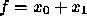
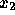
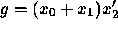

Many applications first build a set of BDDs and then derive ZDDs from the BDDs. These applications should create the manager with 0 ZDD variables and create the BDDs. Then they should call Cudd_zddVarsFromBddVars to create the necessary ZDD variables--whose number is likely to be known once the BDDs are available. This approach eliminates the difficulties that arise when the number of ZDD variables changes while ZDDs are being built.
The simplest conversion from BDDs to ZDDs is a simple change of representation, which preserves the functions. Simply put, given a BDD for f, a ZDD for f is requested. In this case the correspondence between the BDD variables and ZDD variables is one-to-one. Hence, Cudd_zddVarsFromBddVars should be called with the multiplicity parameter equal to 1. The conversion proper can then be performed by calling Cudd_zddPortFromBdd . The inverse transformation is performed by Cudd_zddPortToBdd .
ZDDs are quite often used for the representation of covers . This is normally done by associating two ZDD variables to each variable of the function. (And hence, typically, to each BDD variable.) One ZDD variable is associated with the positive literal of the BDD variable, while the other ZDD variable is associated with the negative literal. A call to Cudd_zddVarsFromBddVars with multiplicity equal to 2 will associate to BDD variable i the two ZDD variables 2i and 2i+1.
If a BDD variable group tree exists when Cudd_zddVarsFromBddVars is called (see Section 3.13) the function generates a ZDD variable group tree consistent to it. In any case, all the ZDD variables derived from the same BDD variable are clustered into a group.
If the ZDD for f is created and later a new ZDD variable is added to the manager, the function represented by the existing ZDD changes. Suppose, for instance, that two variables are initially created, and that the ZDD for  is built. If a third variable is added, say , then the ZDD represents  instead. This change in function obviously applies regardless of what use is made of the ZDD. However, if the ZDD is used to represent a cover , the cover itself is not changed by the addition of new variable. (What changes is the characteristic function of the cover.)